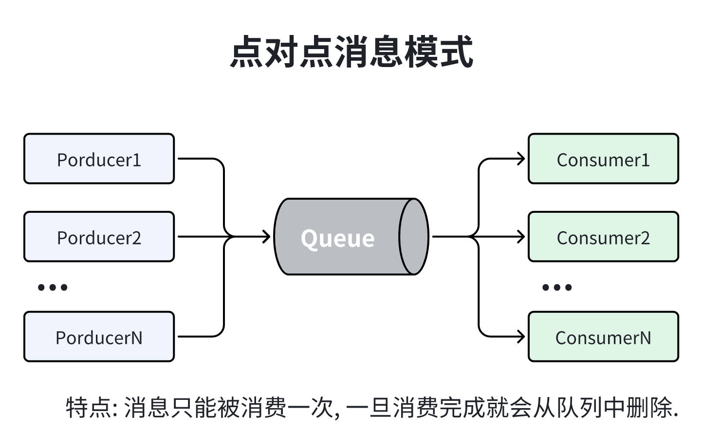
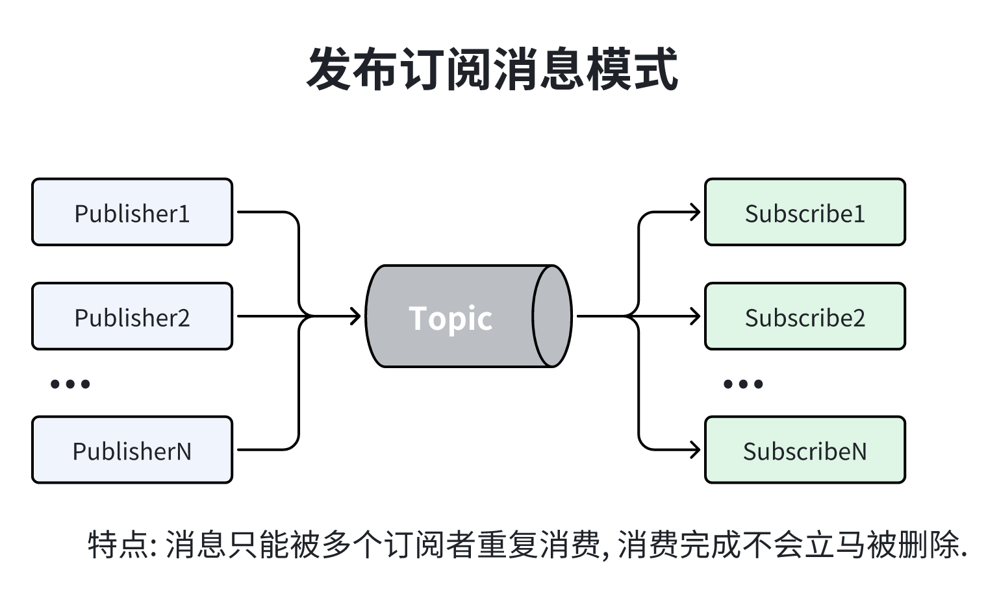
x1介绍: kafka是一种高吞吐量的分布式发布订阅消息系统(消息引擎系统), 由Linkedin公司开发的一个分布式;2 多分区;多副本;多生产者;多订阅者的分布式消息队列. 2010年捐献给了apache作为顶级开源项目.3 4功能点:5 -> 时间复杂度O(1)方式提供消息持久化能力, 对TB级别以上的数据也保证秒级访问.6 -> 高吞吐量, 在低配置的服务器上每秒支持100k的消息.7 -> 分布式消息, 并且保证每个Partition内的消息顺序传输.8 -> 支持离线数据处理和实时消息处理.9 -> 支持在线水平扩展.10
11消息传递模式: 12 -> 点对点传输模式: 消息持久化到一个队列中. 有一个或多个消费者消费队列中的数据. 但是一条消息只能被消费一次, 当一个消费者消费了队列中的某条数据之后, 该条数据则从消息队列中删除. 该模式即使有多个消费者同时消费数据, 也能保证数据处理的顺序.13 -> 发布订阅模式: 消息被持久化到一个topic中. 消费者可以订阅一个或多个topic, 消费者可以消费该topic中所有的数据, 同一条数据可以被多个消费者消费, 数据被消费后不会立马删除. 在发布-订阅消息系统中, 消息的生产者称为发布者, 消费者称为订阅者.14
15优点:16 -> 解耦: 消息的收发可以放到不同的微服务中进行执行, 就可以独立的扩展或修改两边的处理过程, 只要确保它们遵守同样的接口约束.17 -> 冗余: 副本, 在消息处理失败时, 没有消息副本将会导致数据丢失, 消息队列把数据进行持久化直到它们已经被完全处理, 通过这一方式规避了数据丢失风险.18 -> 扩展性: 消息队列解耦了你的处理过程, 所以增大消息入队和处理的频率是很容易的, 只要另外增加处理过程即可. 不需要改变代码, 不需要调节参数.19 -> 灵活性&峰值处理能力: 使用消息队列能够面对突发的访问压力, 来进行削峰填谷, 保证系统高可用.20 -> 可恢复性: 系统的一部分组件失效时, 不会影响到整个系统. 消息队列降低了进程间的耦合度, 所以即使一个处理消息的进程挂掉, 加入队列中的消息仍然可以在系统恢复后被处理.21 -> 顺序保证: 在大多使用场景下, 数据处理的顺序都很重要. 大部分消息队列本来就是排序的, 并且能保证数据会按照特定的顺序来处理. Kafka保证一个Partition内的消息的有序性.22 -> 缓冲: 消息队列通过一个缓冲层来帮助任务最高效率的执行———写入队列的处理会尽可能的快速. 该缓冲有助于控制和优化数据流经过系统的速度.23 -> 异步通信: 消息队列提供了异步处理机制, 允许用户把一个消息放入队列, 但并不立即处理它. 想向队列中放入多少消息就放多少, 然后在需要的时候再去处理它们.24
25削峰填谷: 指缓冲上下游瞬时突发流量, 使其更平滑. 特别是对于那种发送能力很强的上游系统, 如果没有消息引擎的保护26 下游系统可能会直接被压垮导致全链路服务雪崩. 一旦有了消息引擎, 它能够有效地对抗上游的流量冲击, 真正做到将上游的"峰"填满到"谷"中, 避免了流量的震荡.27 消息引擎系统的另一大好处在于发送方和接收方的松耦合, 这也在一定程度上简化了应用的开发, 减少了系统间不必要的交互.28 29应用场景:30 -> 日志收集: elk系统.31 -> 消息系统: 解耦生产者和消费者.32 -> 用户活动跟踪: 记录用户各种行为.33 -> 运营指标: 用于记录运营监控数据.34 -> 流失处理: Spark Stream 和 Stom.35
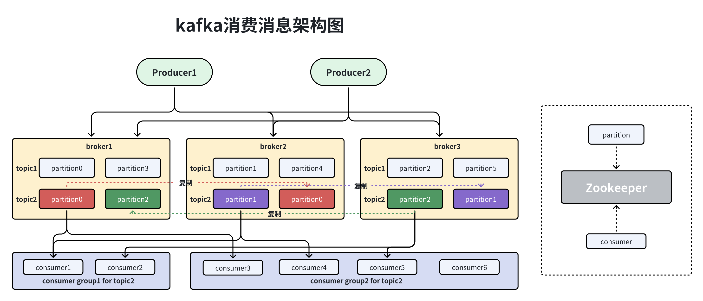
121名词介绍:2 -> Broker: 部署kafka的服务器称为Broker, Broker存储topic数据.3 -> Topic: 每条发布到kafka集群的消息都有一个类别, 这个类别被称为Topic. 物理上不同Topic的消息分开存储, 逻辑上一个Topic的消息虽然保存于一个或多个Broker上但用户只需指定消息的Topic即可生产或消费数据而不必关心数据存于何处.4 -> Partition: Topic中的数据分割为一个或多个Partition. 每个Topic至少有一个Partition, 每个Partition中的数据使用多个Segment文件存储. 5 Partition中的数据是有序的, 不同Partition间的数据丢失了数据的顺序. 如果Topic有多个Partition, 消费数据时就不能保证数据的顺序. 在需要严格保证消息的消费顺序的场景下, 需要将Partition数目设为1.6 -> Producer: 生产者即数据的发布者, 该角色将消息发布到Kafka的topic中. 生产者发送的消息, 存储到一个Partition中, 生产者也可以指定数据存储的Partition.7 -> Consumer: 消费者可以从Broker中读取数据, 消费者可以消费多个topic中的数据.8 -> Consumer Group: 每个Consumer属于一个特定的Consumer Group, 可为每个Consumer指定group name, 若不指定group name则默认为group.9 -> Leader: 每个Partition有多个副本, 其中有且仅有一个作为Leader, Leader是当前负责数据的读写Partition.10 -> Follower: Follower跟随Leader, 所有写请求都通过Leader路由, 数据变更会广播给所有Follower, Follower与Leader保持数据同步. 如果Leader失效, 则从Follower中选举出一个新的Leader. 11 当Follower与Leader挂掉, 卡住或者同步太慢, Leader会把这个Follower从"in sync replicas"(ISR)列表中删除, 重新创建一个Follower.12
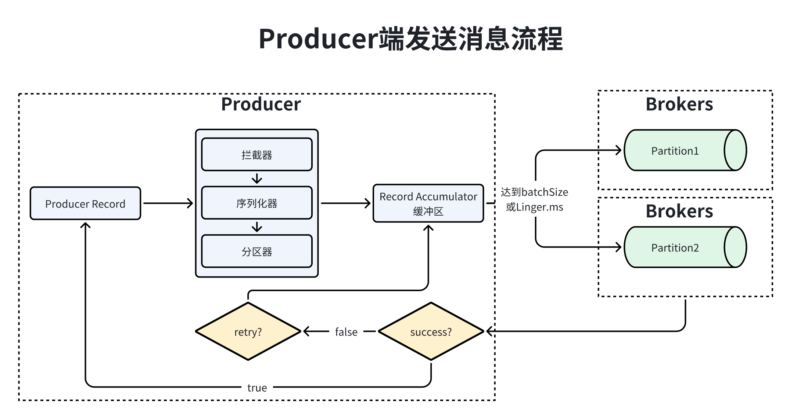
1711Producer消息发送流程: 2 -> 1.Producer创建时, 会创建一个Sender线程并设置为守护线程.3 -> 2.生产消息时, 内部是异步流程, 生产的消息先经过拦截器=>序列化器=>分区器, 然后将消息缓存在缓冲区(在Producer创建时创建的).4 -> 3.批次发送的条件是缓冲区数据大小达到batch.size或linger.ms达到上限, 哪个先达到就算哪个.5 -> 4.批次发送后, 发往指定分区, 然后落盘到broker;如果生产者配置了retrires参数大于0并且失败原因允许重试, 那么客户端内部会对该消息进行重试.6 -> 5.落盘到broker成功, 返回生产元数据给生产者.7 -> 6.元数据返回有两种方式, 一种是通过阻塞直接返回, 另一种是通过回调返回.8
9Producer配置信息:10 -> bootstrap.servers: kafka服务端的连接地址.11 -> key.serializer: key的序列化器.12 -> value.serializer: value的序列化器.13 -> acks: 确认机制, 默认为all.14 --> all/-1: 等待所有的follower返回commit的结果在返回给producer.15 --> 0: 消息只放在缓冲区不许等待任何结果, 速度最快, Producer收到的消息偏移量是-1.16 --> 1: Leader partition 回复commit之后, 返回ack.17 -> retires: 重试次数, 发消息失败时, 重试的次数. MAX_IN_FLIGHT_REQUESTS_PER_CONNECTION=1 可以保证重试消息的顺序.18 -> compression.type: 生产者生成数据的压缩格式. 默认none. 压缩是针对整批消息说的, 每批消息量越大, 压缩效率越好.19 --> none: 不压缩.20 --> gzip: 使用gzip压缩.21 --> snappy: 使用snappy压缩.22 --> lz4: 使用lz4压缩.23 -> retry.backoff.ms: retry时等待的时间, 默认100.24 -> request.timeout.ms: Producer等待发送结果的时长, 超过被当做失败.25 -> inteceptor.classes: 拦截器.26 -> bztch.size: 每批消息的数量.27 -> client.id: 传给broker的id, 用于日志跟踪.28 29自定义Producer序列化器: 需要实现, org.apache.kafka.common.serialization.Serializer接口.30 public class DemoSerializer implements Serializer<User> {31
32 33 public void configure(Map<String, ?> map, boolean b) {34 }35
36 37 public byte[] serialize(String topic, User data) {38 if (data == null) {39 return null;40 }41
42 int userId = data.getUserId();43 String userName = data.getUserName();44
45 int length = 0;46 byte[] bytes = null;47
48 if (userName != null) {49 bytes = userName.getBytes();50 length = bytes.length;51 }52
53 //第一个4 代表key userid的长度54 //第二个4 代表字节数组的长度55 //第三个length 代表字节数组56 ByteBuffer buffer = ByteBuffer.allocate(4 + 4 + length);57 buffer.putInt(userId);58 buffer.putInt(length);59 buffer.put(bytes);60
61 //字节数组62 return buffer.array();63 }64
65 66 public void close() {67 }68 }69
70Producer指定分区: 71 -> 分区计算: message中提供了partition则会分发到当前的partition;没提供但是指定key会对key进行hash取模运算;没指定key通过轮询的方式到达指定的partition.72 -> 实现自定义分区器, 实现 org.apache.kafka.clients.producer.Partitioner接口.73 -> 部分源码分析: org.apache.kafka.clients.producer.KafkaProducer#partition74 /**75 * computes partition for given record.76 * if the record has partition returns the value otherwise77 * calls configured partitioner class to compute the partition.78 */79 private int partition(ProducerRecord<K, V> record, byte[] 80 serializedKey, byte[] serializedValue, Cluster cluster) {81 Integer partition = record.partition();82 // 判断record中的partition是否存在 不存在根据key计算83 return partition != null ?84 partition :85 partitioner.partition(86 record.topic(), record.key(), 87 serializedKey, record.value(), serializedValue, cluster88 );89 }90
91 /**92 * Compute the partition for the given record.93 *94 * @param topic The topic name95 * @param key The key to partition on (or null if no key)96 * @param keyBytes serialized key to partition on (or null if no key)97 * @param value The value to partition on or null98 * @param valueBytes serialized value to partition on or null99 * @param cluster The current cluster metadata100 */101 public int partition(String topic, Object key, byte[] keyBytes, 102 Object value, byte[] valueBytes, Cluster cluster) {103 List<PartitionInfo> partitions = cluster.partitionsForTopic(topic);104 int numPartitions = partitions.size();105 if (keyBytes == null) {106 int nextValue = nextValue(topic);107 // 获取到可用的partition108 List<PartitionInfo> availablePartitions = 109 cluster.availablePartitionsForTopic(topic);110 if (availablePartitions.size() > 0) {111 int part = Utils.toPositive(nextValue) % availablePartitions.size();112 return availablePartitions.get(part).partition();113 } else {114 // no partitions are available, give a non-available partition115 return Utils.toPositive(nextValue) % numPartitions;116 }117 } else {118 // hash the keyBytes to choose a partition119 return Utils.toPositive(Utils.murmur2(keyBytes)) % numPartitions;120 }121 }122
123Producer拦截器: 124 -> 作用: 主要实现clinet端(Producer和Consumer)定制化控制逻辑.125 -> Producer端自定义实现拦截器: 126 --> 实现org.apache.kafka.clients.producer.ProducerInterceptor接口.127 --> 实现onSend方法: 该方法主要在KafkaProducer.send方法中调用运行在用户主线程中, Producer确保在消息被序列化以计算分区前调用该方法. 用户可以在该方法中对消息做任何操作, 但最好保证不要修改消息所属的topic和分区, 否则会影响目标分区的计算.128 --> 实现onAcknowledgement方法: 该方法在消息应答之前或者消息发送失败时调用, 并且通常都是在Producer回调逻辑触发之前. onAcknowledgement运行在Producer的IO线程中, 因此不要在该方法中放入很重的逻辑, 否则会拖慢Producer的消息发送效率.129 --> 注意: 拦截器可能被运行在多个线程中, 因此在具体实现时用户需要自行确保线程安全. 130 如果指定了多个Interceptor, 则Producer将按照指定顺序调用它们, 并仅仅是捕获每个Interceptor可能抛出的异常"记录到错误日志中而非在向上传递".131 --> 自定义实现拦截器Demo:132 public class InterceptorDemo <KEY,VALUE> implements ProducerInterceptor<KEY,VALUE> {133 //发送消息之前调用134 135 public ProducerRecord<KEY, VALUE> onSend(ProducerRecord<KEY, VALUE> record) {136 System.out.println("拦截器1---go");137 // 此处根据业务需要对相关的数据作修改138 String topic = record.topic();139 Integer partition = record.partition();140 Long timestamp = record.timestamp();141 KEY key = record.key();142 VALUE value = record.value();143 Headers headers = record.headers();144 // 添加消息头145 headers.add("interceptor", "myInterceptor".getBytes());146
147 ProducerRecord<KEY, VALUE> newRecord = new ProducerRecord<KEY, VALUE>(148 topic, partition, timestamp, key, value, headers149 );150 return newRecord;151 }152 //确认消息调用153 154 public void onAcknowledgement(RecordMetadata metadata, Exception exception) {155 System.out.println("拦截器1---back");156 if (exception != null) {157 // 如果发生异常，记录日志中158 System.out.println(exception.getMessage());159 }160 }161 //释放资源162 163 public void close() {164 }165 //配置configs166 167 public void configure(Map<String, ?> configs) {168 }169 }170 --> 配置自定义拦截器: configs.put(ProducerConfig.INTERCEPTOR_CLASSES_CONFIG, "com.demo.InterceptorDemo");171
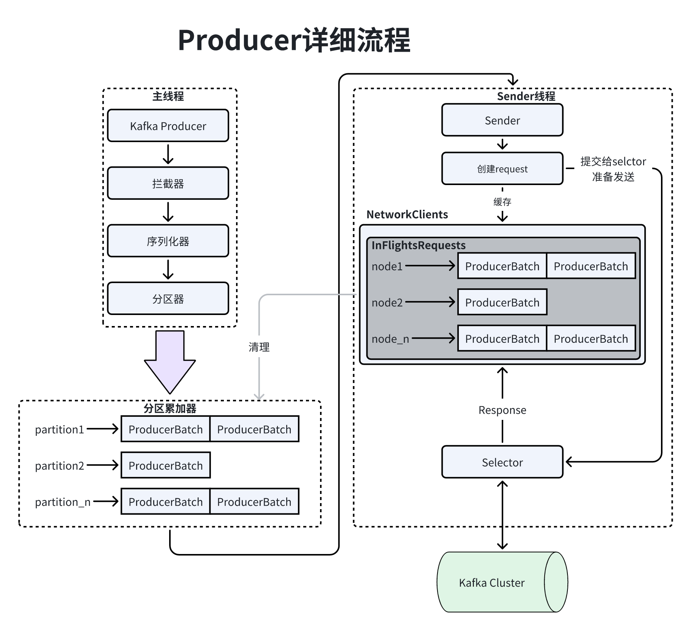
101Producer分为2个线程:2 -> 主线程: 负责消息创建;拦截器;序列化器;分区器;讲消息追加到消息收集器(RecordAccumulator).3 --> 消息收集器: 为每个分区都维护一个Deque<ProducerBatch>类型的双端队列.4 --> ProducerBatch: 就是Record集合, 批量发送提高kafka吞吐量, 降低网络影响.5 --> Producer使用BufferPool来维护ByteBuffer, 将送消息在发送之前进行保存. 6 --> 在发送新消息时, 寻找双端队列 从队尾获取一个ProducerBatch, 判断当前消息大小是否可以写入该批次, 无法写入时, 根据消息大小创建一个新的ProducerBatch.7 -> Sender线程: 从消息收集器中获取缓存的消息, 处理成Map<Node, List<ProducerBatch>>, Node表示Broker的节点. 8 --> 将Map<Node, List<ProducerBatch>>转换成Map<NodeId,Request>.9 --> 将Map<NodeId, Deque<Request>>保存到InFlightRequests缓存中, 获取到leastLoadedNode(负载最小), 来将消息尽快发送出去.10
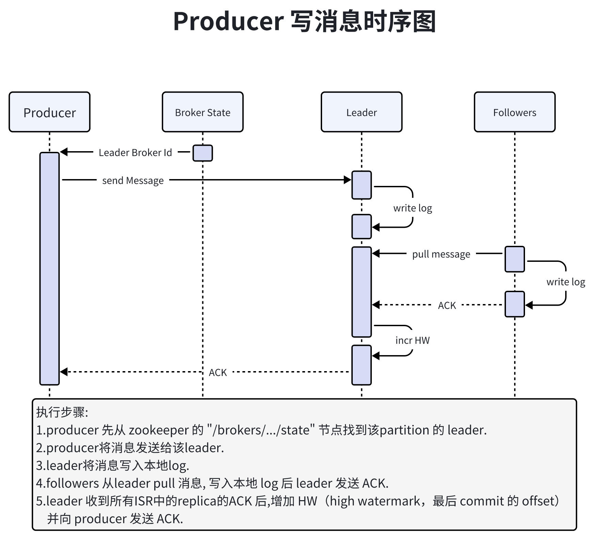
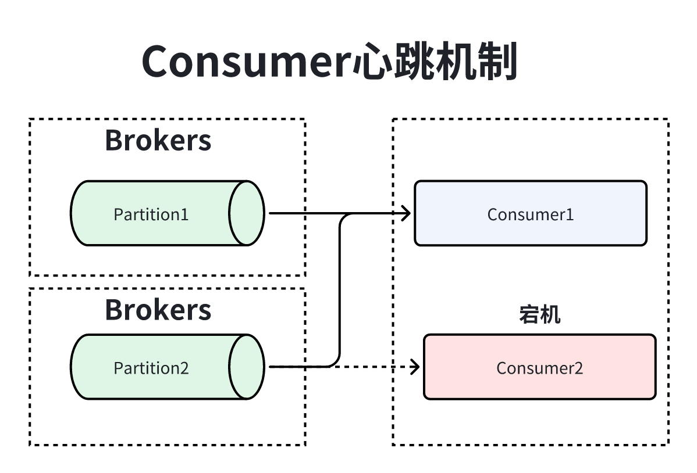
451Consumer:2 -> 心跳机制: Consumer会与Broker之间有健康检查, Broker Coordinator会给Consumer定时发送心跳, Consumer宕机时, 触发reblance, 会将partition重新分配给其他正常的Consumer. 3 --> 心跳参数控制:4 --> session.timeout.ms: 心跳回复超时时长.5 --> max.poll.intercal.ms: 心跳拉取间隔时长.6 -> Consumer参数配置信息:7 --> bootstrap.sercers: kafka broker地址列表. 这个列表只是为了发现集群可以配置2台.8 --> key.deserlizer: key的反序列化器, 实现org.apache.kafka.common.serialization.Deserializer.9 --> value.deserlizer: value的反序列化器, 实现Deserializer.10 --> clinet.id: clinet的id用于日志追踪.11 --> group.id: 消费组的id.12 --> auto.offset.reset: 初始化时, 需要从哪儿消费的偏移量. 13 ---> earliest: 从最早偏移量消费.14 ---> latest: 从最晚的偏移量消费.15 ---> none: 不设置, 偏移量不存在的化就会出现异常.16 ---> anything: 直接抛异常.17 --> enable.auto.commit: 是否自动周期性的项服务器提交偏移量, 默认false.18 --> auto.commit.interval.ms: 提交偏移量间隔时长, 默认5s.19 --> fetch.min.bytes: 消息拉取的最小限制, 默认1字节, 可以调高来提高吞吐量.20 --> fetch.max.bytes: 消息拉取的最大限制.21 --> connections.max.idle.ms: 空闲连接存活时长.22 --> check.crcs: 校验消息的CRC32值, 确保消息的完整性, 避免增加额外的负载, 比较耗性能.23 --> exclude.internal.topics: 是否主动暴露topic, true, 需要先订阅才能消费消息.24 --> isolation.level: 消息事务级别.25 ---> read_committed: 只返回已经提交的事务消息.26 --> heartbeat.interval.ms: 心跳时间间隔.27 --> session.timeout.ms: 心跳超时时间, 超过该时间没有收到心跳就会自动剔除Consumer.28 --> max.poll.records: 每批次最大拉取record(消息)数量.29 --> max.poll.interval.ms: 拉取时间间隔.30 --> max.partition.fetch.bytes: 从单个partition拉取最大的数量.31 --> send.buffer.bytes: 缓存大小.32 --> retry.backoff.ms: 失败重试间隔时长.33 --> request.timeout.ms:客户端等待相应的最大时间.34 --> recnnect.backkoff.ms: 重连等待时间.35 --> receive.buffer.bytes: 接收数据时使用的缓存大小.36 --> partition.assignment.strategy: 使用consumer group时, partition分配策略.37 --> metrics.sample.window.ms: 计算指标样本的时间窗口.38 --> metrics.recording.level: 指标的最高记录级别.39 --> metrics.num.samples: 用于计算指标而维护的样本数量.40 --> interceptor.classes: 拦截器, 实现org.apache.kafka.clients.consumer.ConsumerInterceptor.41
42Consumer Group:43 -> 作用: Kafka用来实现一个Topic消息的广播(发给所有的Consumer)和单播(发给某一个Consumer)的手段. 一个Topic可以对应多个Consumer Group. 44 如果需要实现广播, 只要每个Consumer有一个独立的Group就可以了。要实现单播只要所有的Consumer在同一个Group里。用Consumer Group还可以将Consumer进行自由的分组而不需要多次发送消息到不同的Topic。45 -> 用途: Kafka的设计理念之一就是同时提供离线处理和实时处理. 根据这一特性, 可以使用Storm这种实时流处理系统对消息进行实时在线处理, 同时使用Hadoop这种批处理系统进行离线处理, 还可以同时将数据实时备份到另一个数据中心, 只需要保证这三个操作所使用的Consumer属于不同的Consumer Group即可.71介绍: 作为一个消息系统, Kafka遵循了传统的方式, 选择由Producer向Broker Push消息并由Consumer主动从Broker Pull消息. 有些消息中间件比如Facebook的Scribe和Cloudera的FlumeConsumer采用push模式. 事实上, push模式和pull模式各有优劣.2
3push模式: 很难适应消费速率不同的消费者, 因为消息发送速率是由Broker决定的. push模式的目标是尽可能以最快速度传递消息, 但是这样很容易造成Consumer来不及处理消息, 典型的表现就是拒绝服务以及网络拥塞.4
5pull模式: 可以根据Consumer的消费能力以适当的速率消费消息.6
7结论: 对于Kafka而言, pull模式更合适. pull模式可简化Broker的设计, Consumer可自主控制消费消息的速率, 同时Consumer可以自己控制消费方式——即可批量消费也可逐条消费, 同时还能选择不同的提交方式从而实现不同的传输语义.671介绍: Consumer需要向Kafka记录自己的位移数据, 这个提交就是偏移量提交, Committing Offsets. Consumer需要分配给它的每个分区提交各自的偏移量数据, 可以分为自动提交;同步提交.2
3自动提交偏移量: 通过Consumer后台已进行提交. 在开始调用poll方法时, 提交上次poll返回的所有信息, 因此不会出现消息丢失, 但可能会导致重复消息.4自动提交配置:5 -> enable.auto.commit=true (默认开启)6 -> auto.commit.interval.ms (默认5s)7
8同步提交偏移量: 使用commitSync()方法提交poll()返回最新的offset. 9 10
11offset相关的api方法:12 -> assign(collection<> partitions): 给当前消费者手动分配topic partition.13 --> 1.手动分配partition不支持增量分配, 如果之前有分配好的partition, 该操作会覆盖之前的分配.14 --> 2.不会影响consumer group其他consumer消费, 如果topic 元数据发生变更不会触发rebalance.15 --> 3.手动分区分配不能和自动分区分配一起使用. 如果启用了自动提交偏移量, 则在新的partition分配替换旧的分区分配之前, 会对旧的分区分配中的消费偏移量进行异步提交.16 -> assignment(): 获取当前消费者分配的partition集合.17 -> listTopics(): 获取给当前用户授权的所有topic.18 -> partitionsFor(topic): 获取topic的元数据.19 -> beginningOffsets(collection<> partitions): 列出topic的第一个消息的offset. (topic不存在会阻塞)20 -> seekToEnd(collection<> partitions): 将offset移动到partition的最后. 只有在poll或者position才会执行.21 -> seek(partition, offset): 设置topic的offset. 22 -> position(partition): 检查指定topic的consumer的offset.23 -> seek(partition, offset): 将给定每个partition的consumer offset移动到他们起始offset. 只有在poll的时候才会执行.24
25
26public class CommonConsumerApiDemo {27 public static void main(String[] args) {28 Map<String, Object> configs = new HashMap<>();29 configs.put(ConsumerConfig.BOOTSTRAP_SERVERS_CONFIG, "node1:9092");30 configs.put(ConsumerConfig.KEY_DESERIALIZER_CLASS_CONFIG, StringDeserializer.class);31 configs.put(ConsumerConfig.VALUE_DESERIALIZER_CLASS_CONFIG, StringDeserializer.class);32 KafkaConsumer<String, String> consumer = new KafkaConsumer<>(configs);33
34 //1 手动分配一个主题35 consumer.assign(Arrays.asList(new TopicPartition("tp_demo_01",0)));36
37 //2 获取当前消费者手动分配的topic集合38 Set<TopicPartition> assignments = consumer.assignment();39
40 //3 获取对用户授权的所有主题分区元数据。该方法会对服务器发起远程调用。41 Map<String, List<PartitionInfo>> stringListMap = consumer.listTopics();42
43 //4 获取指定topic的所有分区信息44 List<PartitionInfo> partitions = consumer.partitionsFor("tp_demo_01");45 for (PartitionInfo partition : partitions) {46 //在线的副本node信息47 Node[] nodes = partition.inSyncReplicas();48 //离线的副本node信息49 Node[] nodes2 = partition.offlineReplicas();50 }51
52 //5 获取指定分区的开始偏移量53 Map<TopicPartition, Long> topicPartitionLongMap = 54 consumer.beginningOffsets(consumer.assignment());55
56 //6 下一个要消费的消息现在还是未提交状态的事务消息。57 consumer.seekToEnd(consumer.assignment());58
59 //7 将指定主题指定分区移动到指定的偏移量60 consumer.seek(new TopicPartition("tp_demo_01", 1), 10);61 //8 检查指定主题分区的消费偏移量62 long position = consumer.position(new TopicPartition("tp_demo_01",1));63
64 consumer.close();65 }66}67
161介绍: rebalance就是一个协议, 如何将consumer group下的所有消费者分配topic下的所有的partition, 比如1个topic有100个partition, 1个consumer group下只有20个consumer, 再协调者的控制下让组内每个消费者分配到5个partition, 这个就是rebalance.2
3触发条件:4 -> 1.consumer group组内成员发生变更, consumer增加或者减少.5 -> 2.topic的partition数量发生变更, kafka目前只支持增加parition, 增加的时候就会触发reblance.6 -> 3.当conusmer使用正则表达式订阅topic时, 新增了topic就会触发reblance.7
8缺点: reblance过程中, consumer无法进行消费, 就会阻塞, 并影响kafka的tps, 如果kafka集群内broker数量比较多, reblance可能耗时比较严重, (分钟或者小时级别) kafka基本就是不可用的状态.9
10规避reblance: 可以增加max.poll.interval.ms时间(默认5分钟), 来增加poll的时间间隔, 避免consumer处理业务逻辑耗时严重导致kafka误认为consumer宕机.11
12其他参数说明:13 -> session.timout.ms: 控制心跳超时时间(推荐6s). 14 -> heartbeat.interval.ms: 控制心跳发送频率(推荐2s).15 -> max.poll.interval.ms: 控制poll的间隔.(推荐6分钟)16
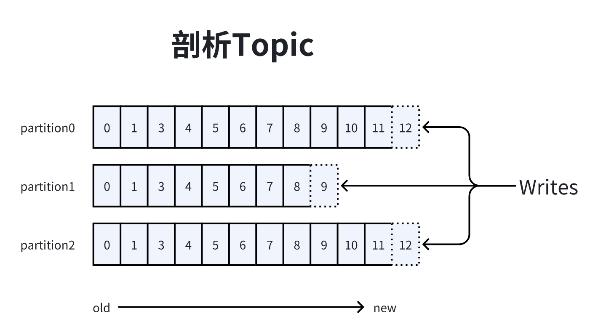
241理解Topic: Topic在逻辑上可以被认为是一个Queue, 每条消费都必须指定它的Topic, 可以简单理解为必须指明把这条消息放进哪个Queue里.2 3理解Patition: 为了使得kafka的吞吐率可以线性提高, 物理上把Topic分成一个或多个Partition, 每个Partition在物理上对应一个文件夹, 该文件夹下存储这个Partition的所有消息和索引文件. 4 创建Topic时, 同时可以指定分区数目, 分区数越多, 其吞吐量也越大, 但是需要的资源也越多, 同时也会导致更高的不可用性, Kafka在接收到生产者发送的消息之后, 会根据均衡策略将消息存储到不同的分区中. 5 因为每条消息都被append到该Partition中, 属于顺序写磁盘, 因此效率非常高. 经验证, 顺序写磁盘效率比随机写内存还要高, 这是Kafka高吞吐率的一个很重要的保证.6
7消息持久化机制: 对于传统的message queue而言, 一般会删除已经被消费的消息, 而Kafka集群会保留所有的消息, 无论其被消费与否. 因为磁盘限制, 不可能永久保留所有数据, 因此Kafka提供两种策略删除旧数据. 一是基于时间, 二是基于Partition文件大小.8 例如, 可以通过配置$KAFKA_HOME/config/server.properties, 让Kafka删除一周前的数据, 也可在Partition文件超过1GB时删除旧数据.9
10Partition文件配置: 11 # 符合删除条件的日志文件的最小时间12 log.retention.hours=16813 # 日志段文件的最大大小。当达到这个大小时，将创建一个新的日志段。14 log.segment.bytes=107374182415 # 检查日志段的时间间隔，以确定它们是否可以根据保留策略被删除16 log.retention.check.interval.ms=30000017 # 如果设置了log.cleaner.enable =true，则清理器将被启用，然后可以为日志压缩标记单个日志。18 log.cleaner.enable=false19
20Partition配置性能: 因为Kafka读取特定消息的时间复杂度为O(1), 与文件大小无关, 所以这里删除过期文件与提高Kafka性能无关. 选择怎样的删除策略只与磁盘以及具体的需求有关. 21
22Consumer控制Offset: Kafka会为每一个Consumer Group保留一些metadata信息比如当前消费的消息的position, 也即offset. 这个offset由Consumer控制. 23 正常情况下Consumer会在消费完一条消息后递增该offset. Consumer也可将offset设成一个较小的值, 重新消费一些消息. 因为offset由Consumer控制, 所以Kafka Broker是无状态的. 它不需要标记哪些消息被哪些消费过, 也不需要通过Broker去保证同一个Consumer Group只有一个Consumer能消费某一条消息, 因此也就不需要锁机制. 这也为Kafka的高吞吐率提供了有力保障.24 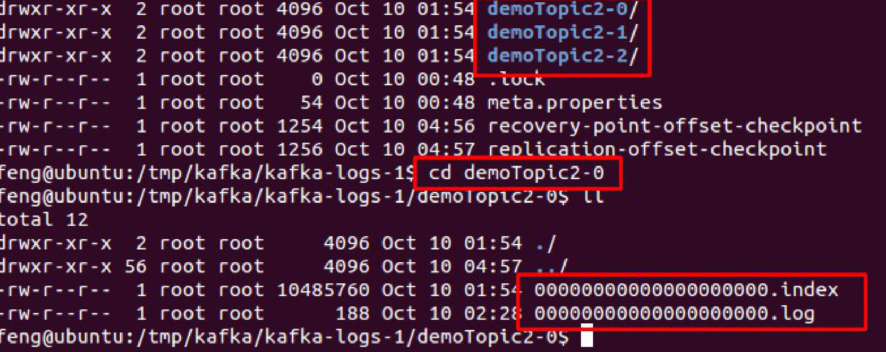
341介绍: Kafka消息是以Topic为单位进行归类的, 各个Topic之间彼此独立互不影响, 每个Topic可以划分多个Partition, 每个Partition都存在一个记录消息数据和日志文件.2
3写入方式: Producer采用Push模式将消息发布到Broker, 每条消息都被append到Patition中, 属于顺序写磁盘(顺序写磁盘效率比随机写内存要高, 保障kafka吞吐率).4
5LogSegment介绍: Partition中的日志文件称为LogSegment. 每个LogSegment都有一个基准偏移量表示当前LogSegment中第一条消息的offset.6 偏移量是一个64位的长整形数, 固定是20位数字, 长度未达到用0补充, 索引文件和日志文件都由该文件明明规则00000000000000000000.index 00000000000000000000.timestamp.7
8LogSegment特点: 9 -> 一个Partition中包含多个LogSegment.10 -> Kafka日志追加是顺序写入的.11 -> LogSegment可以减小日志文件的大小.12 -> 进行日志删除的时候和数据查找的时候可以快速定位.13 -> ActiveLogSegment是活跃的日志段, 有写入权限, 其余的LogSegment只有读权限.14
15后缀名介绍:16 -> .index: 偏移量索引文件.17 -> .timestamp: 时间戳文件.18 -> .log: 日志文件.19 -> .snapshot: 快照文件.20 -> .deleted: 删除文件.21 -> .cleaned: 日志清零临时文件.22 -> .swap: 日志压缩文件.23 -> .leader-epoch-checkpoint: epoch检查文件.24 25消息路由: Producer发送消息到Broker时, 会根据分区算法选择将其存储到哪一个Partition, 有3种路由机制.26 -> 1.指定了Patition, 则直接使用.27 -> 2.未指定Patition但指定key, 通过对key的value进行hash选出一个.28 -> 3.Patition和key都未指定, 使用轮询选出一个Patition.29
30Broker保存消息: 31 -> 存储方式: 物理上把topic分成一个或多个patition(对应server.properties中的num.partitions=3配置), 每个patition物理上对应一个文件夹(该文件夹存储该patition的所有消息和索引文件).32 -> 存储策略: 无论消息是否被消费, kafka都会保留所有消息. 有两种策略可以删除旧数据.33 --> 基于时间: log.retention.hours=16834 --> 基于大小: log.retention.bytes=1073741824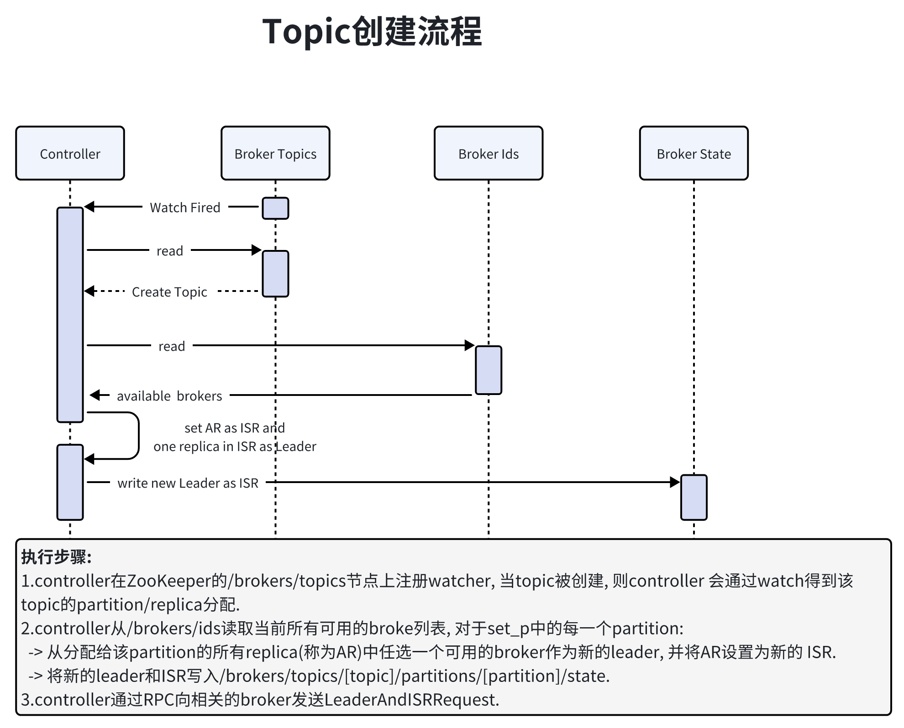
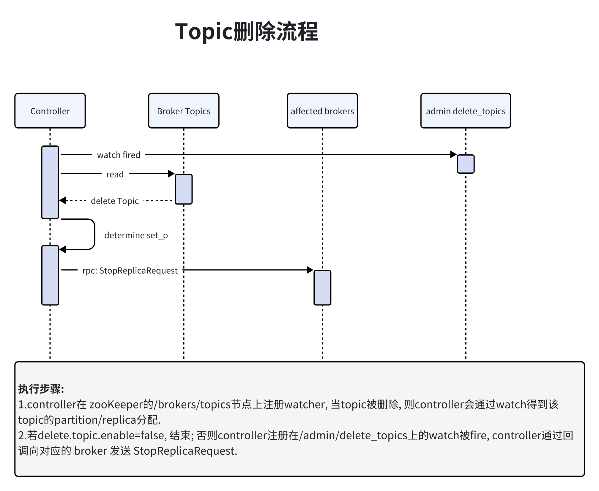
161delivery guarantee(投递保证)类型:2 -> At most once: 消息可能会丢, 但绝不会重复传输.3 -> At least one: 消息绝不会丢, 但可能会重复传输.4 -> Exactly once: 每条消息肯定会被传输一次且仅传输一次, 很多时候这是用户所想要的.5
6Broker消息投递: Producer向Broker发送消息时, 一旦消息被commit, 因为replication的存在, 它就不会丢.7 如果在Producer发送数据给Broker后, 遇到网络问题而造成通信中断, 那Producer就无法判断该条消息是否已经commit. 发生故障时幂等性的重试多次, 这样就做到了Exactly once.8 9Consumer消息Commit: Consumer在从Broker读取消息后. 10 -> 直接commit, 就会在Zookeeper中保存该Consumer在该Partition中读取的消息的offset. 一次再读该Partition时会从下一条开始读取.11 -> 如未commit, 下一次读取的开始位置会跟上一次commit之后的开始位置相同.12 -> 将Consumer设置为autocommit, 即Consumer一旦读到数据立即自动commit.13
14结论: 数据处理与commit的顺序在很大程度上决定了消息从Broker和Consumer的delivery guarantee semantic. 15 Kafka默认保证At least once, 并且允许通过设置Producer异步提交来实现At most once. 而Exactly once要求与外部存储系统协作, 幸运的是Kafka提供的offset可以非常直接非常容易的使用这种方式.16
91需要Replication原因:2 -> Kafka在0.8以前的版本中没有Replication的, 一旦某一个Broker宕机, 则所有的Partition数据都不可被消费, 这与Kafka数据持久性及Delivery Guarantee的设计目标相悖. 同时Producer都不能再将数据存于这Partition中.3 -> 如果Producer使用同步模式, 则Producer会在尝试重新发送message.send.max.retries(默认值为3)次后抛出Exception, 用户可以选择停止发送后续数据也可选择继续选择发送. 而前者会造成数据的阻塞, 后者会造成本应发往该Broker的数据的丢失.4 -> 如果Producer使用异步模式, 则Producer会尝试重新发送message.send.max.retries(默认值为3)次后记录该异常并继续发送后续数据, 这会造成数据丢失并且用户只能通过日志发现该问题. 同时, Kafka的Producer并未对异步模式提供callback接口.5 -> 结论: 在没有Replication的情况下, 一旦某机器宕机或者某个Broker停止工作则会造成整个系统的可用性降低. 随着集群规模的增加, 整个集群中出现该类异常的几率大大增加, 因此对于生产系统而言Replication机制的引入非常重要.6
7Leader Election选举原因: 因为需要保证同一个Partition的多个Replica之间的数据一致性(其中一个宕机后其它Replica必须要能继续服务并且即不能造成数据重复也不能造成数据丢失). 8 如果没有一个Leader, 所有Replica都可同时读/写数据, 那就需要保证多个Replica之间互相(N×N条通路)同步数据, 数据的一致性和有序性非常难保证, 大大增加了Replication实现的复杂性, 同时也增加了出现异常的几率. 而引入Leader后, 只有Leader负责数据读写, Follower只向Leader顺序Fetch数据(N条通路),系统更加简单且高效.9
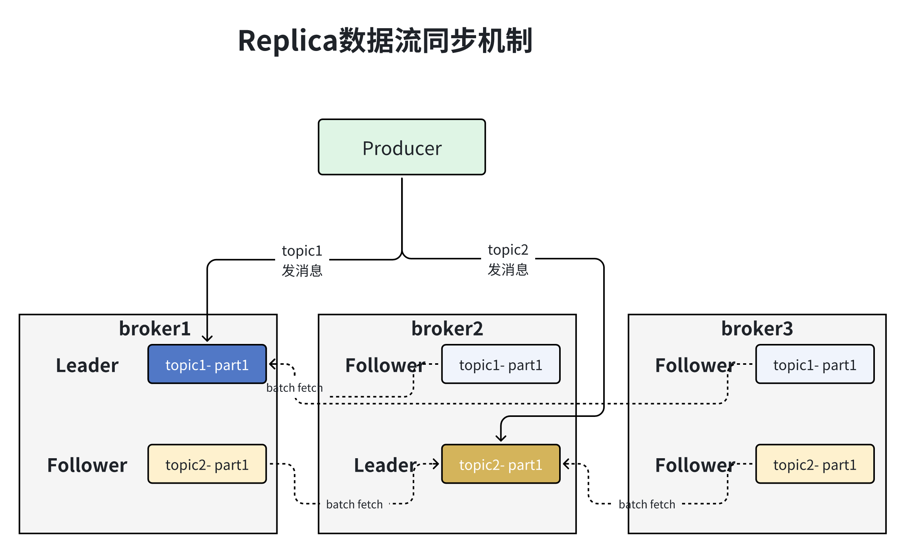
511问题: 如何将所有Replica均匀分布到整个集群?2 -> 为了更好的做负载均衡, Kafka尽量将所有的Partition均匀分配到整个集群上. 一个典型的部署方式是一个Topic的Partition数量大于Broker的数量.3 同时为了提高Kafka的容错能力, 也需要将同一个Partition的Replica尽量分散到不同的机器. 如果所有的Replica都在同一个Broker上, 那一旦该Broker宕机, 该Partition的所有Replica都无法工作, 也就达不到HA的效果. 4 如果某个Broker宕机了, 需要保证它上面的负载可以被均匀的分配到其它幸存的所有Broker上.5
6kafka分配Repica算法:7 -> 1.将所有Broker(假设共n个Broker)和待分配的Partition排序.8 -> 2.将第i个Partition分配到第[i mod n]个Broker上(取模运算).9 -> 3.将第i个Partition的第j个Replica分配到第[(i + j) mode n]个Broker上.10
11Data Replication(副本策略): Kafka的高可靠性的保障来源于其健壮的副本策略.12 -> 消息传递同步策略: Producer在发布消息到某个Partition时, 先通过ZooKeeper找到该Partition的Leader,13 然后无论该Topic的Replication Replica有多少个, Producer只将该消息发送到该Partition的Leader. 14 Leader会将该消息写入其本地Log, 每个Follower都批量的从Leader pull数据, 通过这种方式可以保证Follower存储的数据顺序与Leader一致. 15 Follower在收到该消息并写入其Log后, 向Leader发送ACK. 一旦Leader收到了ISR(in sync replicas)中的所有Replica的ACK, 该消息就被认为已经commit了, Leader将增加HW(偏移量)并且向Producer发送ACK.16 为了提高性能, 每个Follower在接收到数据后就立马向Leader发送ACK, 而非等到数据写入Log中. 因此, 对于已经commit的消息, Kafka只能保证它被存于多个Replica的内存中, 而不能保证它们被持久化到磁盘中, 也就不能完全保证异常发生后该条消息一定能被Consumer消费.17 Consumer读消息也是从Leader读取, 只有被commit过的消息才会暴露给Consumer.18
19 -> 思考: Follower如何感应到 Leader有新消息了?20 -> Follower在启动的时候会启动一个ReplicaFetcherThread线程, 会不断实时从Leader拉取日志消息, 调用AbstractFetcherThread#doWork方法进行日志阶段(truncate)+日志获取(buildFetch)+日志处理(processPartitionData), 并写入到本地日志中, 从而实现Leader副本脚本之间的数据同步. 21
22 -> ACK机制: 对于Kafka而言, 判断一个Broker是否还可用2个条件, 维护与ZooKeeper的session通过ZK的HeartBeat实现;Follower必须能及时复制Leader的消息. 23 Leader会跟踪与其保持同步的Replica列表, 该列表称为ISR(即in-sync Replica). 如果一个Follower超过一定时间没有给Leader发送Fetch请求或者落后太多, Leader将把它从ISR中移除. 24 一定时间指的是/config/server.properties中通过replica.lag.time.max.ms来配置, 默认10000;落后太多指的是Follower复制的消息落后于Leader后的条数超过预定值, replica.lag.max.messages配置, 默认4000.25 完全同步复制要求所有Follower都复制完, 这条消息才会被commit, 这种复制方式极大的影响了吞吐率. 异步复制, Follower异步的从Leader复制数据, 数据只要被Leader写入log就被认为已经commit(强一致性). 这种情况下如果Follower都复制完都落后于Leader, 而如果Leader突然宕机, 则会丢失数据. 26 Kafka的复制机制既不是完全的同步复制, 也不是单纯的异步复制. 而Kafka使用ISR的方式很好的均衡了确保数据不丢失以及吞吐率. Follower可以批量的从Leader复制数据, 这样极大的提高复制性能(批量写磁盘), 极大减少了Follower与Leader的差距.27 Kafka只解决fail/recover, 不处理"Byzantine"(拜占庭, 一条消息只有被ISR里的所有Follower都从Leader复制过去才会被认为已提交)问题. 这样就避免了部分数据被写进了Leader, 还没来得及被任何Follower复制就宕机了造成数据丢失. 而对于Producer而言, 它可以选择是否等待消息commit, 这可以通过request.required.acks来设置. 这种机制确保了只要ISR有一个或以上的Follower. 一条被commit的消息就不会丢失.28 29 -> Leader Election算法: Leader选举本质上是一个分布式锁. 有两种方式实现基于ZooKeeper的分布式锁:30 --> 节点名称唯一性: 多个客户端创建一个节点, 只有成功创建节点的客户端才能获得锁.31 --> 临时顺序节点: 所有客户端在某个目录下创建自己的临时顺序节点, 只有序号最小的才获得锁.32 --> 解释: Kafka不使用Majority Vote选举方式原因: Majority Vote少数服从多数, 这种模式下, 如果我们有2f+1个Replica(包含Leader和Follower), 那在commit之前必须保证有f+1个Replica复制完消息, 为了保证正确选出新的Leader, fail的Replica不能超过f个. 因为在剩下的任意f+1个Replica里, 至少有一个Replica包含有最新的所有消息. 这种方式有个很大的优势, 系统的latency只取决于最快的几个Broker, 而非最慢那个. 33 为了保证Leader Election的正常进行, 它所能容忍的fail的Follower个数比较少. 如果要容忍1个Follower挂掉, 必须要有3个以上的Replica, 如果要容忍2个Follower挂掉, 必须要有5个以上的Replica. 也就是说, 在生产环境下为了保证较高的容错程度, 必须要有大量的Replica, 而大量的Replica又会在大数据量下导致性能的急剧下降. 这就是这种算法更多用在ZooKeeper这种共享集群配置的系统中而很少在需要存储大量数据的系统中使用的原因. 例如HDFS的HA Feature是基于majority-vote-based journal, 但是它的数据存储并没有使用这种方式.34
35 Kafka使用ISR进项选举: Kafka在ZooKeeper中动态维护了一个ISR(in-sync replicas), 这个ISR里的所有Replica都跟上了Leader, 只有ISR里的成员才有被选为Leader的可能. 在这种模式下, 对于f+1个Replica, 一个Partition能在保证不丢失已经commit的消息的前提下容忍f个Replica的失败. 在大多数使用场景中, 这种模式是非常有利的. 36 实际使用中为了容忍f个Replica的失败, Majority Vote和ISR在commit前需要等待的Replica数量是一样的, 但是ISR需要的总的Replica的个数几乎是Majority Vote的一半. 虽然Majority Vote与ISR相比有不需等待最慢的Broker这一优势, 但是Kafka作者认为Kafka可以通过Producer选择是否被commit阻塞来改善这一问题, 并且节省下来的Replica和磁盘使得ISR模式仍然值得.37 38 -> 选举Leader: 简单实现, 所有Follower都在ZooKeeper上设置一个Watch, 一旦Leader宕机, 其对应的ephemeral znode会自动删除, 此时所有Follower都尝试创建该节点, 而创建成功者(ZooKeeper保证只有一个能创建成功)即是新的Leader, 其它Replica即为Follower.39 --> 存在问题:40 --> 1.split-brain这是由ZooKeeper的特性引起的, 虽然ZooKeeper能保证所有Watch按顺序触发, 但并不能保证同一时刻所有Replica watch到的状态是一样的, 这就可能造成不同Replica的响应不一致.41 --> 2.如果宕机的那个Broker上的Partition比较多, 会造成多个Watch被触发, 造成集群内大量的调整.42 --> 3.每个Replica都要为此在ZooKeeper上注册一个Watch, 当集群规模增加到几千个Partition时ZooKeeper负载会过重.43 --> 实际选举方式: 在所有Broker中选出一个Controller, 所有Partition的Leader选举都由Controller决定. Controller会将Leader的改变直接通过RPC的方式(比ZooKeeper Queue的方式更高效)通知需为为此作为响应的Broker. 同时Controller也负责增删Topic以及Replica的重新分配.44
45 -> 处理宕机的Replica: 在ISR中至少有一个Follower时, Kafka可以确保已经commit的数据不丢失, 但如果某个Partition的所有Replica都宕机了, 就无法保证数据不丢失了. 这种情况下有两种可行的方案:46 --> 1.等待ISR中的任一个Replica活过来, 并且选它作为Leader.47 --> 2.选择第一个活过来的Replica(不一定是ISR中的)作为Leader.48 这就需要在可用性和一致性当中作出一个简单的折衷. 如果一定要等待ISR中的Replica活过来, 那不可用的时间就可能会相对较长. 而且如果ISR中的所有Replica都无法活过来了, 或者数据都丢失了, 这个Partition将永远不可用. 49 选择第一个活过来的Replica作为Leader, 而这个Replica不是ISR中的Replica, 那即使它并不保证已经包含了所有已commit的消息, 它也会成为Leader而作为Consumer的数据源.50 结论: Kafka0.8.*使用了第二种方式, 根据Kafka的文档, 在以后的版本中, Kafka支持用户通过配置选择这两种方式中的一种, 从而根据不同的使用场景选择高可用性还是强一致性.51
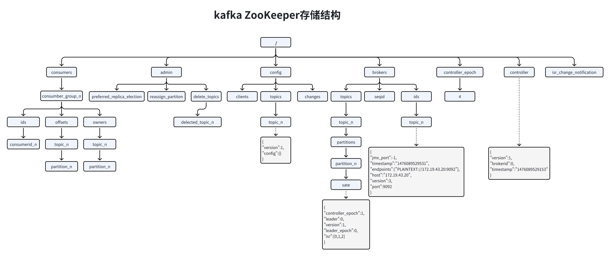
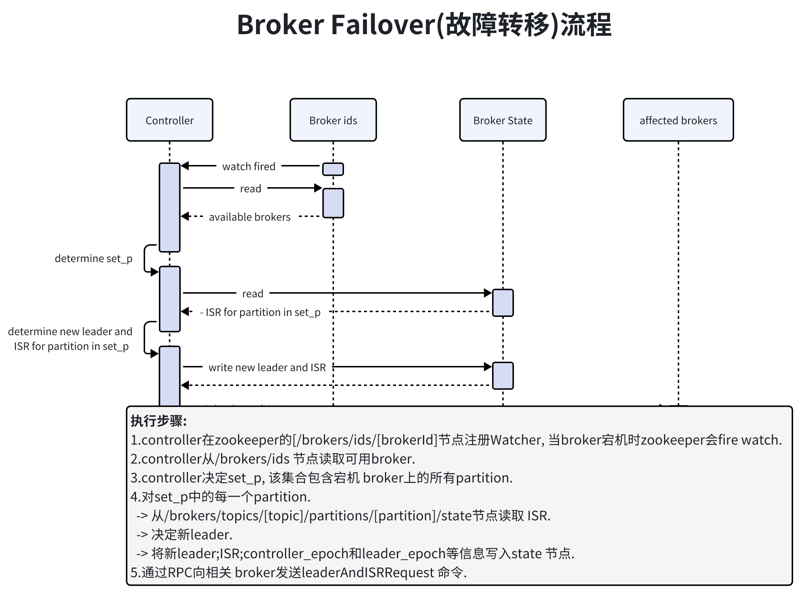
161Controller Failover流程:2 -> 每个broker都会在zookeeper的"/controller"节点注册 watcher, 当controller宕机时zookeeper中的临时节点消失, 存活的broker会收到fire的通知, 每个broker都尝试创建新的controller path, 只有一个竞选成功并当选为controller.3 -> 当新的controller当选时, 会触发KafkaController.onControllerFailover方法. 方法执行流程如下:4 --> 1.读取并增加Controller Epoch.5 --> 2.在reassignedPartitions Patch(/admin/reassign_partitions)上注册watcher.6 --> 3.在preferredReplicaElection Path(/admin/preferred_replica_election)上注册watcher.7 --> 4.通过partitionStateMachine在broker Topics Patch(/brokers/topics)上注册watcher.8 --> 5.若delete.topic.enable=true(默认值是 false), 则partitionStateMachine在Delete Topic Patch(/admin/delete_topics)上注册watcher.9 --> 6.通过replicaStateMachine在Broker Ids Patch(/brokers/ids)上注册Watch.10 --> 7.初始化ControllerContext对象, 设置当前所有topic, "活"着的broker列表. 所有partition的 leades及ISR等.11 --> 8.启动replicaStateMachine和partitionStateMachine.12 --> 9.将brokerState状态设置为RunningAsController.13 --> 10.将每个partition的Leadership信息发送给所有"活"着的 broker.14 --> 11.若auto.leader.rebalance.enable=true(默认值是true), 则启动partition-rebalance线程. 15 --> 12.若delete.topic.enable=true且Delete Topic Patch(/admin/delete_topics)中有值, 则删除相应的Topic.16
241介绍: 保证kafka集群高可并且不会丢消息.2 -> 创建topic的时候指定副本数量, --replication-factor 3表示指定的分区的副本数, 不要超过broker的数量.3 -> Leader是负责读写的节点, 而其他的副本则是Follower, Producer只把消息发送到Leader, Follower会定期的从Leader上pull数据.4 -> ISR是Leader负责维护的与其保持同步的Replica列表, 即当前活跃的副本列表. 如果一个Follow落后太多, Leader会将它从ISR中移除. 落后太多意思是该Follow复制的消息Follow长时间没有向Leader发送fetch请求(参数: replica.lag.time.max.ms 默认值：10000).5 -> 为了保证可靠性, 可以设置acks=all. Follower收到消息后, 会像Leader发送ACK. 一旦Leader收到了ISR中所有Replica的ACK, Leader就commit, 那么Leader就向Producer发送ACK.6
7副本分配:8 -> 均衡的将副本分散在各个broker上.9 -> 对于某个broker上分配的partition, 它的其他的副本在其他的broker上.10 -> 如果所有的broker都有机架信息, 尽量将分区的各个副本分配到不同的机架上的broker.11
12副本失效: 当ISR中的一个Follower副本滞后Leader副本的时间超过参数replica.lag.time.max.ms(默认10000)指定的值时即判定为副本失效, 需要将此Follower副本剔出除ISR.13 原理: 当Follower副本将Leader副本的LEO之前的日志全部同步时, 则认为该Follower副本已经追赶上Leader副本, 此时更新该副本的lastCaughtUpTimeMs标识.14
15副本复制: 日志复制算法(log replication algorithm)必须提供的基本保证, 如果它告诉客户端消息已被提交, 而当前Leader出现故障, 新选出的Leader也必须具有该消息. 在出现故障时, Kafka会从挂掉Leader的ISR里面选择一个Follower作为这个分区新的Leader. 16 每个分区的leader会维护一个in-sync replica(同步副本列表, 又称ISR). 当Producer向broker发送消息, 消息先写入到对应Leader分区, 然后复制到这个分区的所有副本中. ACKS=ALL时, 只有将消息成功复制到所有同步副本(ISR)后, 这条消息才算被提交.17 18一个副本与leader失去同步原因:19 -> 1. 慢副本(Slow replica): follower replica在一段时间内一直无法赶上leader的写进度. 造成这种情况的最常见原因之一是follower replica上的I/O瓶颈, 导致它持久化日志的时间比它从leader消费消息的时间要长.20 -> 2. 卡住副本(Stuck replica): follower replica在很长一段时间内停止从leader获取消息. 这可能是以为 GC停顿或者副本出现故障.21 -> 3. 刚启动副本(Bootstrapping replica): 当用户给某个主题增加副本因子时, 新的followerreplicas是不同步的, 直到它跟上leader的日志.22
23如何确认某个副本处于滞后状态: 通过replica.lag.time.max.ms来检测卡住副本(Stuck replica)在所有情况下都能很好地工作. 它跟踪follower副本没有向leader发送获取请求的时间, 通过这个可以推断follower是否正常. 另一方面, 使用消息数量检测不同步慢副本(Slow replica)的模型只有在为单个主题或具有同类流量模式的多个主题设置这些参数时才能很好地工作, 但我们发现它不能扩展到生产集群中所有主题.24
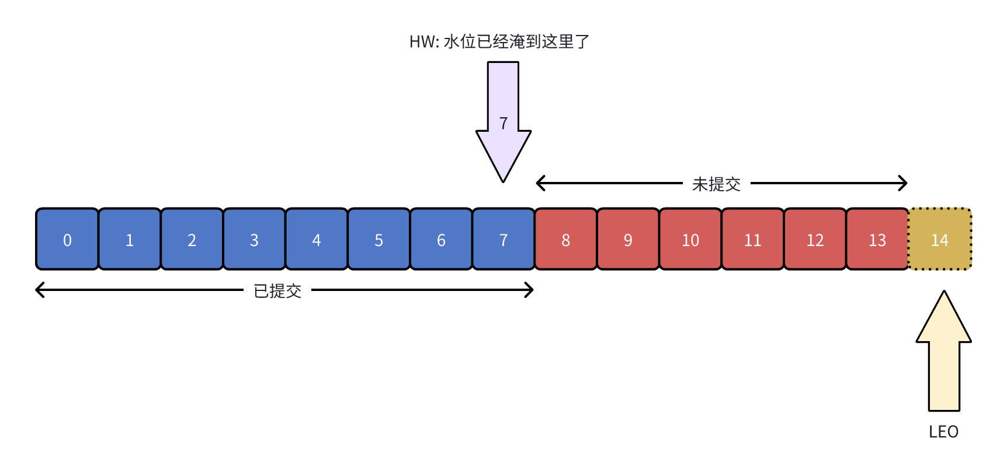
711LEO HW: HW指的就是偏移量(offset)或者水位标记(watermark). LEO指的是日志偏移量(log end offset), 记录下一条消息的偏移量.2
3 -> 思考: Follower如果更新LEO?4 -> 回答: Follower会不停地向Leader副本所在的broker发送fetch请求, Follower一旦获取消息之后写入到自己的日志中进行备份, 在kafka中有2套Follower副本, 一套LEO保存在Follower副本所在的副本管理机制中, 另外一套保存在Leader所在的副本管理机制中.5 Leader的副本机制会保存所有的follower副本的LEO. Kafka利用第一套帮助Follower更新HW值, 利用第二套更新Leader副本的HW值.6
7 -> 思考: Follower副本的本地LEO何时更新? 8 -> 回答: Follower副本的LEO值就是日志的LEO值, 每当写入一条消息, LEO值就会被更新, 当Follower发送FETCH请求后, Leader将数据返回给Follower, 此时Follower开始log写数据, 从而自动更新LEO值.9
10 -> 思考: Leader端Follower-LEO何时更新?11 -> 回答: Leader端的Follower-LEO更新发生在Leader在处理Follower FETCH请求时. 一旦Leader接收到Follower发送的FETCH请求, 它先从Log中读取相应的数据, 给Follower返回数据前, 先更新Follower的LEO.12
13 -> 思考: Follow何时更新HW?14 -> 回答: Follower更新HW发生在其更新LEO之后, 一旦Follower向Log写完数据, 尝试更新自己的HW值. 比较当前LEO值与FETCH响应中Leader的HW值, 取两者的小者作为新的HW值. 即: 如果Follower的LEO大于Leader的HW, Follower HW值不会大于Leader的HW值.15
16 -> 思考: Leader副本何时更新LEO? 17 -> 回答: 和Follower更新LEO相同, Leader写Log时自动更新自己的LEO值.18
19 -> 思考: Leader副本何时更新HW值? 20 -> 回答: Leader的HW值就是分区HW值, 直接影响分区数据对消费者的可见性.Leader在以下四种场景会先尝试去更新分区的HW值.21 --> 1.Follower变为Leader时尝试更新HW.22 --> 2.当Broker从ISR剔除的时候尝试更新HW.23 --> 3.Leader副本写入消息时会尝试更新HW.24 --> 4.Leader处理Follower FETCH请求时尝试更新HW.25 -> Leader更新HW过程: Leader上保存了一套Follower副本的LEO以及自己的LEO. 当尝试确定分区HW时, 它会选出所有满足条件的副本, 比较它们的LEO(包括Leader的LEO), 并选择最小的LEO值作为HW值.26 满足的条件:Follow处于ISR中;副本LEO落后于LeaderLEO的时长小于配置配置的值(replica.lag.time.max.ms 默认10s).27
28 29LEO HW更新流程:30 -> 初始化状态: 初始时Leader和Follower的HW和LEO都是0, Leader中的RemoteLEO指的是Leader端保存的FollowLEO也是0. 此时生产者不发送消息, Follower会一直发送FETCH请求, Follower的FETCH请求因为无数据会被寄存到Leader端的purgatory中, 待500ms(replica.fetch.wait.max.ms)超时后会强制完成. 如果在寄存期间生产者发来数据, 则Kafka会自动唤醒该FETCH请求, 让Leader继续处理.31 -> Producer发送消息: 生产者给topic发送一条消息, Leader接收到请求做两件事:32 --> 1.把消息写入Log, 同时自动更新Leader自己的LEO.33 --> 2.尝试更新Leader HW值, 假设此时Follower尚未发送FETCH请求, Leader端保存的RemoteLEO依然是0, 因此Leader会比较它自己的LEO值和Remote LEO值, 发现最小值是0, 与当前HW值相同, 故不会更新分区HW值(仍为0).34 -> Follower发送Fetch请求: 在Leader处理完消息之后Follower发送FETCH请求到Leader此时leader处理顺序:35 --> 1.读取Log数据.36 --> 2.更新remote LEO = 0(为什么是0? 因为此时Follower还没有写入这条消息. Leader如何确认Follower还未写入呢? 这是通过Follower发来的FETCH请求中的Fetch offset来确定的)37 --> 3.尝试更新分区HW: 此时Leader LEO = 1, Remote LEO = 0, 故分区HW值= min(Leader LEO, Follower Remote LEO) = 0.38 --> 4.把数据和当前分区HW值(依然是0)发送给Follower副本.39 -> Follower接收到FETCH请求的response之后操作: 40 --> 1.写入本地Log, 同时更新Follower自己管理的LEO为1.41 --> 2.更新Follower HW: 比较本地LEO和 FETCH Response中的当前Leader HW值, 取较小者, Follower HW=0. 42 --> 结论: 第一次Follower发送FETCH请求, 更新了LEO的值但是分区中的HW值尚未被更新.43 -> Follower第二次发送FETCH请求:44 --> 1.读取Log数据.45 --> 2.更新Remote LEO = 1(Follower的LEO).46 --> 3.尝试更新分区HW: 此时leader LEO = 1, Remote LEO = 1, 分区HW值= min(Leader LEO,Follower Remote LEO).47 --> 4.把当前分区HW值响应给Follower副本作为Response(Follower接收到响应之后修改响应的值).48 49HW LEO异常情况: Kafka使用HW值来决定副本备份的进度, 而HW值的更新通常需要额外一轮FETCH RPC才能完成. 可能引起备份数据丢失;备份数据不一致问题.50 -> 数据丢失: 使用HW值来确定备份进度时其值的更新是在下一轮RPC中完成的. 如果Follower在第二次发送FETCH请求之前宕机, 那么就有可能造成数据的丢失.51 丢失数据的前提是min.insync.replicas=1时, 一旦消息被写入Leader端Log即被认为是committed. 延迟一轮 FETCH RPC更新HW值的设计使follower HW值是异步延迟更新, 若在这个过程中Leader发生变更, 那么成为新Leader的Follower的HW值就有可能是过期的, 导致生产者本是成功提交的消息被删除.52 -> 数据不一致: 比如Leader HW写了2个Follower写了1个此时Leader和Follower同时宕机, 在重启就会导致数据不一致问题.53 -> 解决方案: 54 --> 1.Leader broker中会保存这样的一个缓存, 并定期地写入到一个checkpoint文件中.55 --> 2. 当Leader写Log时它会尝试更新整个缓存: 如果这个Leader首次写消息, 则会在缓存中增加一个条目;否则就不做更新.56 --> 3.每次副本变为Leader时会查询这部分缓存, 获取出对应Leader版本的偏移量, 则不会发生数据不一致和丢失的情况.57
58
59消息重复消费以及解决方案:60 -> 1. 生产者阶段:61 --> 产生原因: 生产发送的消息没有收到正确的broker响应, 导致生产者重试.(网络原因;生产者宕机;broker宕机)62 --> 解决方案: 启动kafka幂等性, enable.idempotence=true, 以及ack=all以及 retries > 1.63 --> 顺序问题: 如果配置max.in.flight.requests.per.connection大于1(默认5, 单个连接上发送的未确认请求的最大数量, 表示上一个发出的请求没有确认下一个请求又发出了). 大于1可能会改变记录的顺序, 因为如果将两个batch发送到单个分区, 第一个batch处理失败并重试, 但是第二个batch处理成功, 那么第二个batch处理中的记录可能先出现被消费.64 --> 解决方案: 设置max.in.flight.requests.per.connection为1, 可能会影响吞吐量, 可以解决单个生产者发送顺序问题. 如果多个生产者, 生产者1先发送一个请求, 生产者2后发送请求, 此时生产者1返回可恢复异常, 重试一定次数成功了, 虽然生产者1先发送消息, 但生产者2发送的消息会被先消费.65 -> 2.broker阶段:66 --> 产生原因: ack=0表示不需要等待确认可能会导致数据丢失;ack=1可能会导致follower分区写入失败;unclean.leader.election.enable配置为true, 允许选举ISR以外的副本, 可能会导致数据丢失默认为false不建议修改成true.67 --> 解决方案: ack=all或者 -1;retries > 1;unclean.leader.election.enable: false;min.insync.replicas > 1, 最小同步副本数量;失败的offset单独记录: 生产者发送消息, 会自动重试, 遇到不可恢复异常会抛出, 这时可以捕获异常记录到数据库或缓存, 进行单独处理.68 -> 3.消费者阶段:69 --> 产生原因: 数据消费完没有及时提交offset到broker(网络 宕机等).70 --> 解决方案: 取消自动提交;下游做幂等性, 一般是让下游做幂等或者尽量每消费一条消息都记录offset, 对于少数严格的场景可能需要把offset或唯一ID(例如订单ID)和下游状态更新放在同一个数据库里面做事务来保证精确的一次更新或者在下游数据表里面同时记录消费offset, 然后更新下游数据的时候用消费位移做乐观锁拒绝旧位移的数据更新.71 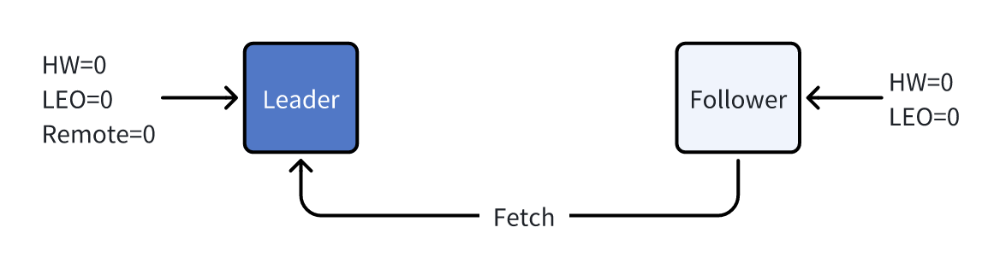
2061介绍: Producer将事务控制.消息(事务开始/结束/中止)发送给事务协调者(使用多阶段协议管理事务高可用), 并将事务的消息直接发送到目标数据分区, 消费者获取事务并缓存每个待处理的事务, 直到他们等到事务消息被提交或者终止.2 -> 事务组: 用于映射到特定的事务协调者(基于日志分区数组和hash), 该组中的生产者需要配置为该组事务生产者. 因为所有事务消息都会通过协调者, 所以要严格保证事务的有序性.3 -> 生产者id: 为了生产者的输入状态与上一个已提交的事务相关联(为了重试事务). 通常使用消费者偏移量来关联. 4 具体做法, 通过消费者偏移量管理器将每个键与该分区的最后一个检查点偏移量和元数据相关联, 在事务生产者中, 我们会保存消费者的偏移量, 消费组偏移量的topic partition将参与事务. 5 因此, 假定生产者在事务中间失败(事务协调器随后到期), 当生产者恢复时, 它可以发出偏移量获取请求, 以恢复与最后提交的事务相关联的输入偏移量, 并从该点恢复事务处理.6 为了支持此功能, 我们需要对偏移量管理器和压缩的 __consumer_offsets 主题进行一些增强.7 --> 首先, 压缩的主题现在还将包含事务控制记录. 我们将需要为这些控制记录提出剔除策略.8 --> 其次, 偏移量管理器需要具有事务意识; 特别是, 如果组与待处理的事务相关联. 则偏移量提取请求应返回错误.9
10事务协调器: 事务协调器是__transaction_state topic特定分区的Leader分区所在的Broker. 它负责初始化, 提交以及回滚事务. 事务协调器在内存管理如下的状态:11 -> 对应正在处理的事务的第一个消息的HW. 事务协调器周期性地将HW写到ZK.12 -> 事务控制日志中存储对应于日志HW的所有正在处理的事务.13 -> 事务消息主题分区的列表: 事务的超时时间;与事务关联的Producer ID.14 -> 需要确保无论是什么样的保留策略(日志分区的删除还是压缩), 都不能删除包含事务HW的日志分段.15
16应用场景: 17 -> 1.producer发多条消息组成一个事务, 这些消息需要对Conumser同时可见或者同时不可见. 18 -> 2.分布式事务.19 -> 3.流式应用对消息请求转发保证消息转发成功.20 -> 4.保证消息不回被重复消息.21
22原子性写入到分区: 事务能够保证kafka topic下发到每个partition的原子写入, 事务中的所有消息都将被成功写入或者丢弃. 23 原子读取-处理-写入周期, 从读取消息, 到处理消息, 在到写入整个过程是一个原子性操作.24
25避免消息重复消费: 通过transaction.id来唯一标识符来避免同一个事务中的消息被不同的consumer给消费. kafka可以保证Consumer最终只能消费非事务性消息或已提交事务的消息, 将会保留未提交事务的消息, 并过滤已中止事务的消息.26
27事务消息: Producer可以显式的发起事务会话, 在这些会话发送中, 并提交或者终止事务.28 -> 原子性: Consumer的应用程序不应该暴漏未提交事务的消息中.29 -> 持久性: Broker不能丢失任何已提交的事务.30 -> 排序: 事务的Consumer应该在每个分区中以原始顺序查看事务消息.31 -> 交织: 每个分区都应该能够接受来自事务性Producer和非事务的Producer的消息.32 -> 事务中不应该有重复的消息. 如果允许事务性和非事务性消息的交织, 则非事务性和事务性消息的相对顺序将基于附加[非事务性消息]和最终提交[事务性消息]的相对顺序.33 34事务配置:35 -> 1. consumer配置:36 --> 将auto.commit关闭.37 --> 不能使用手动提交 commitSync()|commitAsync().38 --> 设置isolation.level READ_COMMITTED(以偏移量顺序来使用非事务消息或已提交的事务消息)或者READ_UNCOMMITTED(以偏移顺序使用已提交和未提交的消息).39 -> 2. producer配置:40 --> trasction.id: 事务id.41 --> enable.idempotence属性.42 --> enable.idempotence: 开启幂等性.43 --> transaction.timeout.ms: 事务超时时间, 事务协调器在主动中止正在进行的事务之前等待生产者更新事务状态的最长时间. 这个配置值将与InitPidRequest一起发送到事务协调器. 如果该值大于max.transaction.timeout. 在broke中设置ms时, 请求将失败, 并出现InvalidTransactionTimeout错误. 默认是60000. 这使得交易不会阻塞下游消费超过一分钟, 这在实时应用程序中通常是允许的.44 -> 3. broker配置:45 --> transactional.id.timeout.ms: 事务协调器在生产者TransactionalId提前过期之前等待的最长时间, 并且没有从该生产者TransactionalId接收到任何事务状态更新. 默认是604800000(7天). 这允许每周一次的生产者作业维护它们的id.46 --> max.transaction.timeout.ms: 事务允许的最大超时. 如果客户端请求的事务时间超过此时间, broke将在InitPidRequest中返回InvalidTransactionTimeout错误. 这可以防止客户机超时过大, 从而导致用户无法从事务中包含的主题读取内容. 默认值为900000(15分钟). 这是消息事务需要发送的时间的保守上限.47 --> transaction.state.log.replication.factor: 事务状态topic的副本数量. 默认值:3.48 --> transaction.state.log.num.partitions: 事务状态主题的分区数. 默认值:50.49 --> transaction.state.log.min.isr: 事务状态主题的每个分区ISR最小数量. 默认值:2.50 --> transaction.state.log.segment.bytes: 事务状态主题的segment大小. 默认值:104857600字节.51
52事务执行流程: 53 -> 初始化阶段.54 --> 1.Producer计算哪个Broker作为事务协调器.55 --> 2.Producer向事务协调器发送BeginTransaction(producerId, generation, partitions... )请求. 56 当然也可以发送另一个包含事务过期时间的. 如果生产者需要将消费者状态作为事务的一部分提交事务, 则需要在BeginTransaction中包含对应的 __consumer_offsets 主题分区信息.57 --> 3.Broker生成事务ID.58 --> 4.Coordinator向事务协调主题追加BEGIN(TxId, producerId, generation, partitions...)消息, 然后发送响应给生产者.59 --> 5. Producer读取响应(包含了事务ID:TxId).60 --> 6.Coordinator(包括Followers)在内存更新当前事务的待确认事务状态和数据分区信息.61 -> 发送阶段.62 --> 1.Producer发送事务消息给主题Leader分区所在的Broker. 每个消息需要包含TxId和TxCtl字段.63 --> 2.TxCtl仅用于标记事务的最终状态. 生产者请求也封装了生产者ID, 但是不追加到日志中.64 -> 结束阶段.65 --> 1. Producer发送OffsetCommitRequest请求并提交与关联的输入状态(如下一个事务输入从哪儿开始).66 --> 2. Producer发送CommitTransaction(TxId, producerId, generation)请求给事务协调器并等待响应(如果响应中没有错误信息，表示将提交事务).67 --> 3. Coordinator向事务控制主题追加PREPARE_COMMIT(TxId)请求并向生产者发送响应.68 --> 4. Coordinator向事务涉及到的每个Leader分区(事务的业务数据的目标主题)的Broker发送一个CommitTransaction(TxId, partitions...)请求.69 --> 5. 事务业务数据的目标主题相关Leader分区Broker.70 ---> 如果是非__consumer_offsets topic的Leader分区: 一收到CommitTransaction(TxId, partition1, partition2, ...)请求就会向对应的分区Broker发送空(null)消息(没有key/value)并给该消息设置TxId和TxCtl(设置为COMMITTED)字段. Leader分区的Broker给协调器发送响应.71 ---> 如果是 __consumer_offsets topic的Leader分区: 追加消息. 该消息的key是 G-LAST-COMMIT, value就是TxId的值. 同时也应该给该消息设置TxId和TxCtl字段. Broker向协调器发送响应.72 --> 6. Coordinator向事务控制主题发送COMMITTED(TxId)请求. __transaction_state.73 --> 7. Coordinator(and followers)尝试更新HW.74 -> 事务终止: 当事务生产者发送业务消息的时候如果发生异常, 可以中止该事务. 如果事务提交超时, 事务协调器也会中止当前事务.75 --> Producer向事务协调器发送AbortTransaction(TxId)请求并等待响应.76 --> Coordinator向事务控制主题追加PREPARE_ABORT(TxId)消息, 然后向生产者发送响应.77 --> Coordinator向事务业务数据的目标主题的每个涉及到的Leader分区Broker发送.78 --> AbortTransaction(TxId, partitions...)请求. (收到Leader分区Broker响应后, 事务协调器中止动作跟上面的提交类似).79 -> 事务幂等性: kafka中事务的幂等性通过添加唯一id来实现相当于业务主键, producerId和sequenceNumber.80 --> ProducerID: 在每个新的Producer初始化时, 会被分配一个唯一的ProducerID, 这个ProducerID对客户端使用者是不可见的.81 --> SequenceNumber: 对于每个ProducerID, Producer发送数据的每个Topic和Partition都对应一个从0开始单调递增的SequenceNumber值.82 83Demo1 模拟Producer发送异常消息84public class TransactionProducer {85 public static void main(String[] args) {86 Map<String, Object> configs = new HashMap<>();87 configs.put(ProducerConfig.BOOTSTRAP_SERVERS_CONFIG, "node1:9092");88 configs.put(ProducerConfig.KEY_SERIALIZER_CLASS_CONFIG, StringSerializer.class);89 configs.put(ProducerConfig.VALUE_SERIALIZER_CLASS_CONFIG, StringSerializer.class);90
91 // 提供生产者client.id92 configs.put(ProducerConfig.CLIENT_ID_CONFIG, "tx_producer");93
94 // 设置事务ID95 configs.put(ProducerConfig.TRANSACTIONAL_ID_CONFIG, "my_tx_id_1");96
97 // 需要ISR全体确认消息98 configs.put(ProducerConfig.ACKS_CONFIG, "all");99
100 KafkaProducer<String, String> producer = new KafkaProducer<String, String>(configs);101
102 // 初始化事务103 producer.initTransactions();104
105 try {106 // 开启事务107 producer.beginTransaction();108 // 发送事务消息109 producer.send(new ProducerRecord<>("tp_tx_01", "txkey1", "tx_msg_4"));110 producer.send(new ProducerRecord<>("tp_tx_01", "txkey2", "tx_msg_5"));111 producer.send(new ProducerRecord<>("tp_tx_01", "txkey3", "tx_msg_6"));112
113 //模拟异常事务114 int i = 1 / 0;115
116 // 提交事务117 producer.commitTransaction();118 } catch (Exception e) {119 e.printStackTrace();120 // 事务回滚121 producer.abortTransaction();122 } finally {123 // 关闭生产者124 producer.close();125 }126 }127} 128
129Demo2 消费消息并发送到另外一个topic130public class MyTxConsumerProducer {131
132 private static KafkaConsumer<String,String> getConsumer(String consumerGroup){133 Map<String, Object> configs = new HashMap<>();134 configs.put(ConsumerConfig.BOOTSTRAP_SERVERS_CONFIG, "linux128:9092");135 configs.put(ConsumerConfig.KEY_DESERIALIZER_CLASS_CONFIG, StringDeserializer.class);136 configs.put(ConsumerConfig.VALUE_DESERIALIZER_CLASS_CONFIG, StringDeserializer.class);137
138 //设置clientid139 configs.put(ConsumerConfig.CLIENT_ID_CONFIG, "consumer_client_01");140 configs.put(ConsumerConfig.GROUP_ID_CONFIG, "consumer_group_01");141 configs.put(ConsumerConfig.ENABLE_AUTO_COMMIT_CONFIG, false);142 configs.put(ConsumerConfig.AUTO_OFFSET_RESET_CONFIG, "earliest");143
144 //只读取已提交的消息145// configs.put(ConsumerConfig.ISOLATION_LEVEL_CONFIG, "read_committed");146 return new KafkaConsumer<String,String>(configs);147 }148
149 private static KafkaProducer<String,String> getProducer(){150 Map<String, Object> configs = new HashMap<>();151 configs.put(ProducerConfig.BOOTSTRAP_SERVERS_CONFIG, "linux128:9092");152 configs.put(ProducerConfig.KEY_SERIALIZER_CLASS_CONFIG, StringSerializer.class);153 configs.put(ProducerConfig.VALUE_SERIALIZER_CLASS_CONFIG, StringSerializer.class);154
155 //设置clientid156 configs.put(ProducerConfig.CLIENT_ID_CONFIG, "producer_client_01");157 configs.put(ProducerConfig.TRANSACTIONAL_ID_CONFIG, "tx_id_01");158 configs.put(ProducerConfig.ACKS_CONFIG, "all");159 //启用幂等性160 configs.put(ProducerConfig.ENABLE_IDEMPOTENCE_CONFIG, true);161 return new KafkaProducer<String, String>(configs);162 }163
164 public static void main(String[] args) {165 String consumerGroup= "consumer_group";166 KafkaConsumer<String, String> consumer = getConsumer(consumerGroup);167 KafkaProducer<String, String> producer = getProducer();168
169 try {170 //初始化事务171 producer.initTransactions();172
173 //订阅主题174 consumer.subscribe(Collections.singleton("tp_tx_01"));175
176 //开启事务177 producer.beginTransaction();178
179 ConsumerRecords<String, String> records = consumer.poll(1_000);180 Map<TopicPartition, OffsetAndMetadata> offsets = new HashMap<>();181 for (ConsumerRecord<String, String> record : records) {182 System.out.println(record);183 producer.send(new ProducerRecord<String,String>("tp_tx_out_01", record.key(), record.value()));184 offsets.put(new TopicPartition(record.topic(), record.partition()),185 new OffsetAndMetadata(record.offset() + 1)); //偏移量表示下一条消费偏移量186 }187
188 //将该消息偏移量作为事务一部分提交 随事务提交和回滚189 producer.sendOffsetsToTransaction(offsets, consumerGroup);190
191 int i = 1 / 0;192 producer.commitTransaction();193
194 } catch (ProducerFencedException e) {195 e.printStackTrace();196 producer.abortTransaction();197 }finally {198 producer.close();199 consumer.close();200 }201 }202}203
204配置:205#消费者监听消息206kafka-console-consumer.sh --bootstrap-server localhost:9092 --topic tp_tx_out_01 --isolation-level read_committed